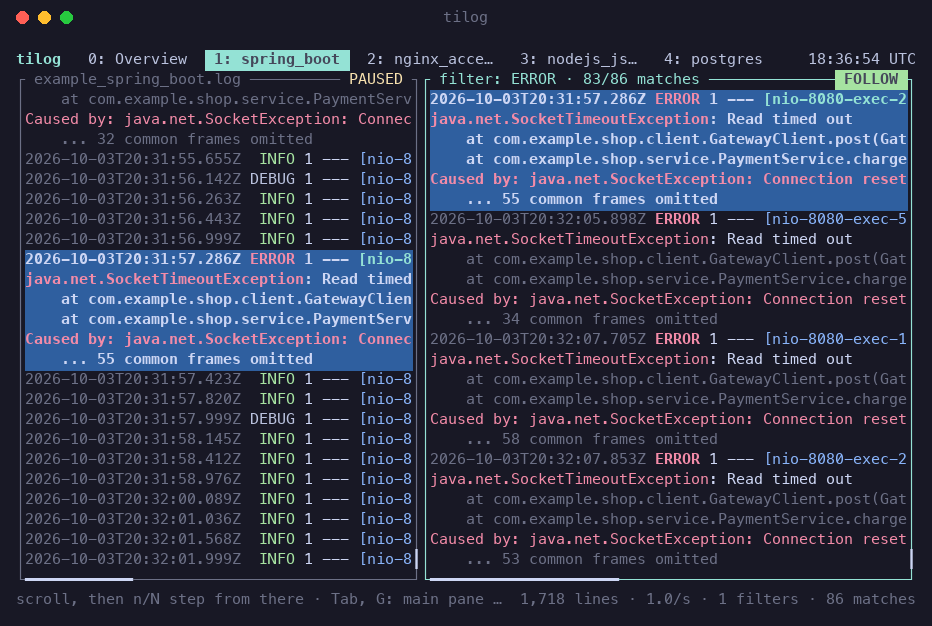

Feels like less and tail
j k Space b g G / n N work as you expect. No configuration, a hint line and a command
menu always say what is possible, and the mouse works.
Live during a deployment
Files, ssh, Docker, Kubernetes and any command, side by side, reconnecting by
themselves. Pipe anything in with | tilog.
Review what went wrong
Filter any source into its own tile, step through the matches with n,
jump between errors with ], and save what you found with :write.
Read-only, small, bounded
It never changes a log or a server and installs nothing remotely. A 2.5 MB binary, a multi-gigabyte file opens at its end, and memory stays bounded.
Install
cargo install --git https://github.com/maxwellscode/tilog # needs Rust 1.88 or newer tilog --print-man > ~/.local/share/man/man1/tilog.1 # the manual page, if you want it
Linux and macOS. On Windows, use WSL. Not on crates.io yet.
Usage
tilog app.log nginx.log # local files tilog ssh:deploy@web1:/var/log/app.log # a remote file, over ssh tilog docker:api kube:prod/web-0 # containers and pods tilog ssh:web1:docker:api # docker on another host kubectl logs -f web-0 | tilog # anything piped in tilog app.log.2.gz # compressed logs

A filter next to its log: n steps through the matches, and the main pane shows each
one in its place, with the lines around it.
The keys that matter
| Key | |
|---|---|
/text, n N | search, next and previous match |
&text | open a filter tile with the matching entries (a stack trace stays whole) |
] [ | next and previous error line |
: | commands: :merge, :goto 08:16, :write, :save, :pause all ... |
0–9, Tab | overview, sources, tiles |
? | all keys and commands |
What it is not
tilog is not a log platform: no storage, indexing, alerting, dashboards or query language. For
format parsing and SQL, use lnav; for the rest, a hosted service. It is
the small tool you open on a terminal, the way you would open tig on a repository.